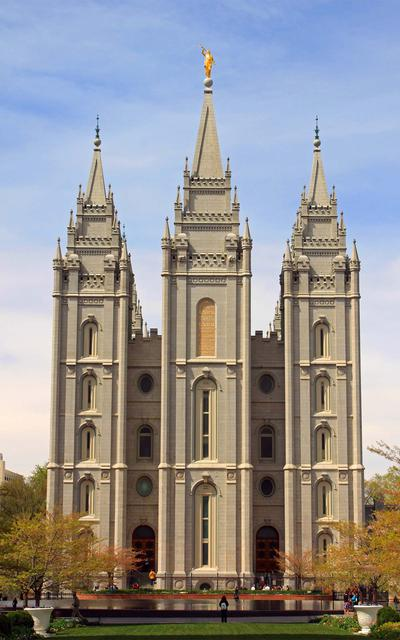
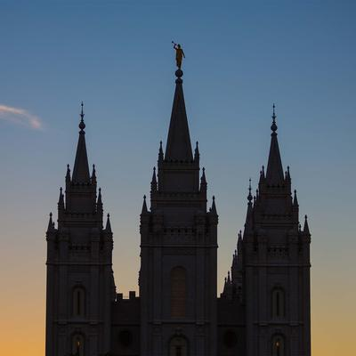
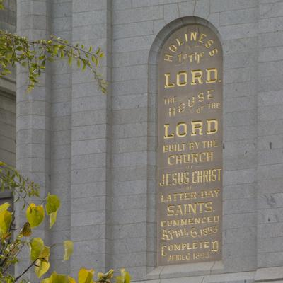

The Salt Lake Temple was the fourth temple built in Utah (though its construction was started first) and the first built in the Salt Lake Valley.
The Salt Lake Temple was the only temple dedicated by President Wilford Woodruff.
With its distinctive spires and statue of the angel Moroni, the Salt Lake Temple is an international symbol of the Church.
The Salt Lake Temple is the largest temple (most square footage) of the Church.
Original plans for the Salt Lake Temple called for two angel Moroni statues—one on the east central spire and one on the west.
The Salt Lake Temple took 40 years to build with its highly ornate interior being completed in just a year. (View the story of the building of the Salt Lake Temple.)
During the construction of the Salt Lake Temple, the St. George Utah Temple, Logan Utah Temple, and Manti Utah Temple were all started and completed.
The walls of the Salt Lake Temple are nine feet thick at the base and six feet thick at the top.

The Salt Lake Temple is the first temple to feature a standing angel Moroni statue. The angel was
created by Paris-trained sculptor Cyrus E. Dallin and built in Salem, Ohio. The Salt Lake Temple
features beautiful hand-painted murals on the walls of its progressive-style ordinance rooms: Creation Room,
Garden Room, World Room, Terrestrial Room (no murals), and Celestial Room (no murals). It is one of
two temples that still employs live acting for presentation of the endowment. The Salt Lake Temple
was completed the afternoon before the dedication. That evening, invited non-Mormon government
officials, businessmen and their wives were given a complete tour of the temple. It was the first
time that a temple had been opened to the public prior to its dedication.
The Salt Lake Temple was dedicated on April 6, 1893—three years before Utah became a state in
1896. On August 13, 1993, the contents of the Salt Lake Temple record stone—a hollow stone in the
foundation—were removed 136 years after they were originally placed there by Brigham Young and other
leaders. Items placed in the stone included books, pamphlets, periodicals, and a set of Deseret gold
coins. Because the stone had cracked, the paper items were severely damaged by moisture. Salvaged
materials are now housed in the Church History Library.

In temples, we can draw closer to the Lord, we can learn more about His plan for our
happiness, we can receive essential ordinances for our exaltation, and we can perform
vicarious service on behalf of those who have died without the gospel of Jesus Christ.
The culminating blessing of the temple is that we can be joined together as families for
eternity, so that our relationships with those we love will last forever.